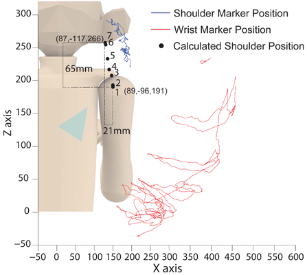
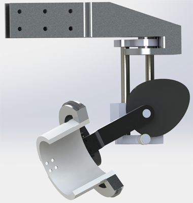

Motorized Exoskeleton Design for Macaque Upper-limb
Motivation and Approach
The proposed motorized exoskeleton is able to work in three control modes: 1) torque control mode to passively collect kinematic data as the exoskeleton tracks macaques’ voluntary arm movements; 2) position control mode to bring the arm and exoskeleton to spatial targets following decoded neural signals; and 3) impedance control mode to act as a source of mechanical perturbations that macaques should resist by sti ffening their arms. To achieve safe, natural motion, the following two subtopics from kinematic and dynamic aspects of the exoskeleton design are conducted.
Kinematic Design
To allow for safe interaction between an external mechanism and biological joints, care must be taken to apply external torques along the axis imposed by the biological joint. Due to the structure of most biological joints, the instantaneous center of rotation (e.g., monkey’s shoulder center) may vary according to the angle of the joint.
To characterize the behavior of the shoulder center in macaques, analysis was performed on the motion of the upper arm. Motion capture data was obtained for a sedated monkey (with markers along the upper arm and torso), as the arm was moved through a variety of postures. This data was partitioned according to the elevation of the arm (roughly speaking, the angle made between the humerus and the spine). The shoulder center was then found by comparing the position of arm markers in multiple frames, and finding the intersection of axes which describe the rigid body transformation between them. A kinematic design matching with this kinematic/morphological analysis is currently being investigated.
 The approximate position of the shoulder center was |
 A mechanism was designed which uses a cam to more |
Actuator Design
Due to limited space at the macaque’s joint side, a cable-driven mechanism is most ideal for lightweight and compact joint side design. To achieve back-drivability and torque-refl ecting, serial elastic mechanisms will be adopted at each of the designed upper-limb joint sides. Bowden cables connecting from the joint side will be driven remotely by the geared DC motors. To reduce sensing complexity and cost at the motor side, friction characteristics of the transmission train will be first identifi ed and then robust/adaptive controllers will be synthesized for output torque estimation and generation.